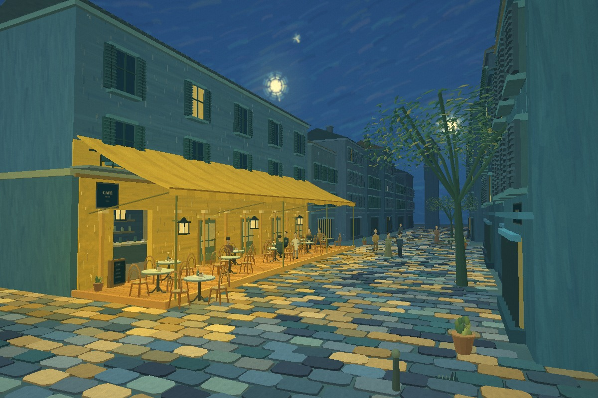
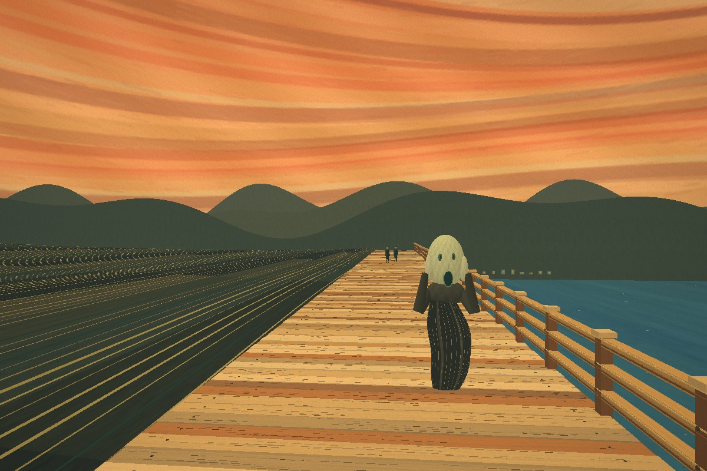

入
Painting to WorldAN AI CREATIVE SKILL
BILINGUAL KIT · 1.1
GETTING STARTED
Your first world,
in four steps.
The Skill guides a coding AI. It is not a hosted upload-to-3D service.


01
Choose one Skill
Install the English or Chinese folder, including its scripts, references and working source assets.
02
Supply your painting
Give an image-capable coding AI a clear reference. Name the exact version when several exist.
03
Author, inspect, refine
The AI rebuilds geometry, paint textures and cameras. Inspect real renders, not only a concept image.
04
Keep the complete work
Get bilingual offline HTML, editable source, notes, actual screenshots and a transparent QA report.
Start with START-HERE.html. Select just one Skill locale.
New images need new scene authoring; initialization alone still shows the café.
New images need new scene authoring; initialization alone still shows the café.